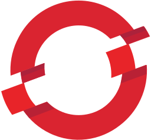
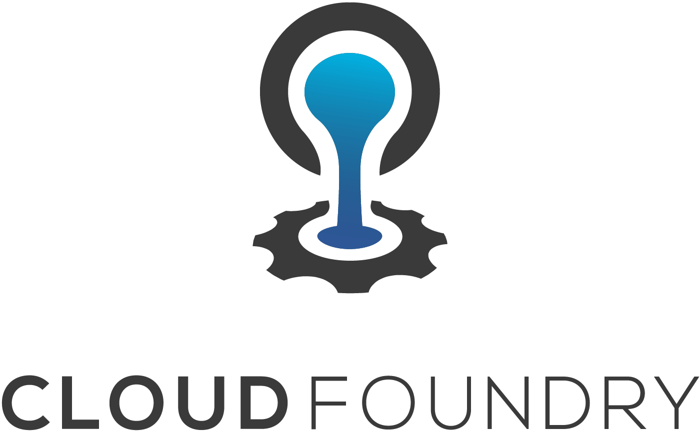
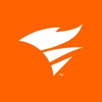
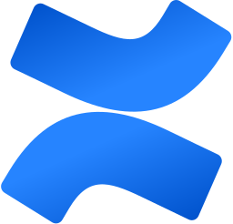
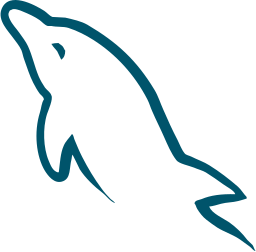
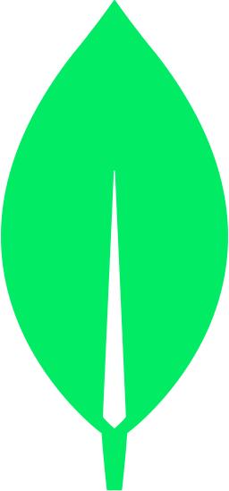

Amazon Web Services
Deepest cloud coverage: dozens of service scanners for cost, security and reliability findings. NudgeBee runs the AWS CLI in a sandbox to investigate incidents and applies approved fixes.
Read in place, in each backend's own query language. Nothing is shipped out to a third party.
NudgeBee connects to the tools you already run and queries them in place, in each backend's own query language. It integrates with 78 systems across cloud, Kubernetes, observability, ticketing, ChatOps, source control, databases and AI models, including Prometheus, Datadog, New Relic, Loki, Jaeger, PagerDuty, Jira, Slack, GitHub and OpenTelemetry, with nothing shipped to a third party.
One collector and one data model across AWS, Azure, GCP and every flavour of Kubernetes.
Deepest cloud coverage: dozens of service scanners for cost, security and reliability findings. NudgeBee runs the AWS CLI in a sandbox to investigate incidents and applies approved fixes.
Full inventory, cost and security scanning across 50+ Azure services, folding in Azure Advisor recommendations. Investigated with the az CLI and remediated behind approval.
Inventory, cost and rightsizing across GCP, enriched with GCP Recommender. NudgeBee investigates with the gcloud CLI and opens a fix behind a human gate.
A live topology of every workload, pod and node, kept current as resources change. NudgeBee runs kubectl and helm in a sandbox to diagnose and, with approval, remediate.
Managed Kubernetes on AWS, with node hardware, capacity and spot-versus-on-demand placement detected automatically for rightsizing.
Managed Kubernetes on Azure, mapped into the same topology and cost model as every other cluster you run.
Managed Kubernetes on GCP, with fleet rightsizing and node placement handled alongside your EKS and AKS clusters.

On-premises and hybrid OpenShift clusters run through the same in-cluster agent and topology model as any other Kubernetes distribution.
Rancher-managed clusters, on-prem or in the cloud, are supported through the standard Helm-chart agent install.
Serverless containers on AWS, inventoried and cost-tracked in the same recommendation taxonomy as your clusters.
Container workloads on ECS, with rightsizing and configuration findings surfaced alongside the rest of your AWS estate.
Serverless functions are inventoried and analysed for cost and configuration alongside your containerised services.

Cloud Foundry platforms are collected into the same multi-cloud inventory and cost model as AWS, Azure and GCP.
Queried in place with PromQL and each backend's native dialect. Prometheus resolution is auto-tuned to the time range.
The primary metrics source. NudgeBee writes and runs PromQL against your Prometheus in place, tuning step resolution to the query window.
A drop-in PromQL-compatible backend, queried the same way as Prometheus for metrics investigation and rightsizing.
Long-term, horizontally scalable Prometheus storage, queried in PromQL for historical baselines and anomaly detection.
Cloud-native observability, queried in PromQL for metrics and used as a trace backend during investigations.
High-cardinality observability, read in place in its PromQL-compatible dialect for metric queries during an investigation.
Native AWS metrics and alarms are ingested and correlated with the rest of your signals, and CloudWatch alarms can be created during remediation.
Azure-native metrics and logs, queried in KQL and folded into the same topology and correlation as your other backends.
GCP-native metrics are ingested for correlation and used as inbound alert sources during triage.
Read where they live, in LogQL, Elasticsearch DSL, ClickHouse SQL and more, and pulled just-in-time around an incident.
Log aggregation queried in LogQL. NudgeBee pulls the exact log lines before a crash or error to build the evidence chain.
Log and event search queried in Elasticsearch DSL, correlated against metrics and traces during an investigation.
Open observability for logs and traces, read in place via ClickHouse SQL as part of the investigation toolset.
Log pipelines feeding Elasticsearch are part of the same log-analysis flow used to reconstruct what happened before an incident.

Cloud log management, read in place and correlated with the rest of your signals during triage.
GCP-native logs pulled into an investigation without moving them out of your project.
Application telemetry queried in KQL, used for logs and traces during an Azure-side investigation.
High-volume logs and traces queried in ClickHouse SQL, including as the store behind SigNoz and OpenTelemetry.
Distributed traces and APM suites feed the topology graph as behavioural edges, so correlation follows real call paths.
Distributed tracing queried during an investigation, with trace co-participation feeding the causal correlation model.
Scalable trace storage in the Grafana stack, read in place to reconstruct request paths across services.
Vendor-neutral traces and metrics, collected by the in-cluster agent and used as a behavioural source for the topology graph.
Kernel-level flow data captured by the node agent, giving the knowledge graph real service-to-service edges with no code changes.
The full Datadog API: metrics, logs, traces, events, hosts, services and APM, queried in place and its APM used as a topology source.
APM and infrastructure telemetry queried in NRQL, with New Relic APM feeding the dependency graph.
Full-stack observability queried in Grail DQL, with Davis findings folded into correlation.
Metrics and traces queried in SignalFlow, read in place and correlated with the rest of your stack.
Data-lake observability queried in OPAL as part of the investigation toolset.
Infrastructure monitoring ingested for correlation and used as an inbound alert source.
AIOps monitoring data folded into NudgeBee's own correlation and ranking.
Open-source infrastructure monitoring, ingested and correlated with cloud and Kubernetes signals.
Classic host and service monitoring, brought into the same ranked incident view as everything else.
GCP-native distributed tracing read in place during investigations of Google Cloud workloads.
Alerts flow in, get de-duplicated and ranked, and the root-cause analysis is written back onto the originating incident.
Prometheus alerts are received, matched to the owning workload, de-duplicated and scored before an investigation starts.
Grafana alerts are ingested as incident sources, and its data sources are read in place during triage.
Two-way incident management: NudgeBee creates, acknowledges and resolves incidents, and writes the cited root-cause analysis back onto the PagerDuty incident automatically.
Incident response with the root-cause analysis written back onto the originating Zenduty incident, so responders see the why, not just the alert.
Create, comment, transition, assign and resolve, all behind one normalized API with per-provider field mapping.
Create and update issues with live field discovery, and keep status in sync so findings track through your existing workflow.
Incidents and change records created and transitioned through ServiceNow's state model, with severity and urgency mapped in code.
Findings and follow-ups filed as GitHub Issues, kept in the same normalized ticket model as your ITSM tools.
Issues created and updated in GitLab, so remediation work lands where your engineers already track it.
Conversational, not slash-commands. Mention Nubi in-channel to investigate, and approve every change from the same thread.
Mention Nubi to kick off an investigation in-thread, receive ranked findings, and approve or reject remediation with an interactive action.
The same conversational investigation and approval flow, delivered natively inside Microsoft Teams.
Findings, investigations and approvals delivered where Google Workspace teams already work.
Alert delivery and notifications for teams that run their operations in Discord.
Notifications and approval links delivered over your own SMTP, with white-labelled templates.
From a log line to the exact commit and author, and back out as a ready-to-merge pull request.
Traces a stack trace to the exact line, commit and author, and in fix mode opens a build-verified, ready-to-merge pull request.
The same code-level root cause and merge-request generation flow, against GitLab repositories.
Repository access for source-level investigation across Bitbucket-hosted code.
GitOps deploys are read as part of the incident window, so a recent rollout is correlated with what broke.

Runbooks and internal docs are indexed so investigations can ground answers in your own knowledge base.
Queried through the in-cluster agent as a proxy, so credentials and data never leave your environment.
Read-only queries during an investigation, proxied through the in-cluster agent so the connection stays inside your network.

Query MySQL as an evidence source during an incident, proxied and credential-injected in your cluster.
SQL Server reads for investigation, run through the same proxy so nothing is exposed externally.
Oracle Database queried in place as part of an investigation, proxied through the agent.
Inspect Redis state during an incident, run through the proxy with commands classified for approval.

Document-store queries proxied through the in-cluster agent for read-only investigation.
Topic and consumer-group state inspected during an investigation, proxied through the agent.
Queue and exchange state read during triage of messaging-related incidents.
Run allowlisted diagnostic commands on hosts over SSH, proxied through the agent and gated at the tool layer.
Bring your own model. Nine provider routes, no lock-in, and embeddings that can run fully on-device for air-gapped deployments.
The default managed route, giving the agents access to Bedrock's model catalog inside your AWS account.
Connect your own OpenAI account. Model choice is resolved per account, agent and conversation.
OpenAI models served through your Azure tenancy for teams standardised on Azure.
Gemini models via Google AI, selectable as the route for any agent.
Claude models via the Anthropic API for teams that prefer them.
Google Cloud's managed model platform, including custom Vertex endpoints.
Self-hosted models served from SageMaker endpoints in your own AWS account.
Open-weight models served from Hugging Face, for teams running their own inference.
Run open-weight models on your own GPUs, with embeddings that can run fully on-device for air-gapped setups.
Queried in native dialects including PromQL, LogQL, KQL, NRQL, Grail DQL, SignalFlow, OPAL and Elasticsearch DSL. New integrations are added regularly, and NudgeBee is extensible to any MCP server.
Everything is queried in place, in each backend's native dialect.
Request an integrationNudgeBee reads them in place, in their own query languages, and nothing leaves your environment. If something is missing, it is usually quick to add.